**Homework 5**
Student name:
Sciper number:
Microfacet BRDF (40 points)
===========================
Evaluating the Microfacet BRDF
------------------------------
When evaluating the microfacet BRDF, there's nothing special to note apart from a change in the original Beckmann pdf function: when alpha is particularly low, it's important to compute the exponentials intelligently, as some values can cancel out (ie do e(a-b) and not e(a)/e(b) when a and b are both very small). When not doing this, we often get wrong values, so it's important to keep this in mind (I double checked some other math functions to avoid having other issues linked to this computer issue).
Sampling the Microfacet BRDF
------------------------------
When sampling, there are two possibilities, either we generate a diffuse reflection or a specular reflection (based on the diffuse and specular parameters of the material). We do a random generation and reuse the sample later when generating the outgoing direction. The returned value is eval * cos(theta i) / pdf.
Validation
----------
On the following images we see that our implementation renders the exact same images for smooth and rough surfaces. We also pass the microfacet tests without any issue.
Ajax (smooth):
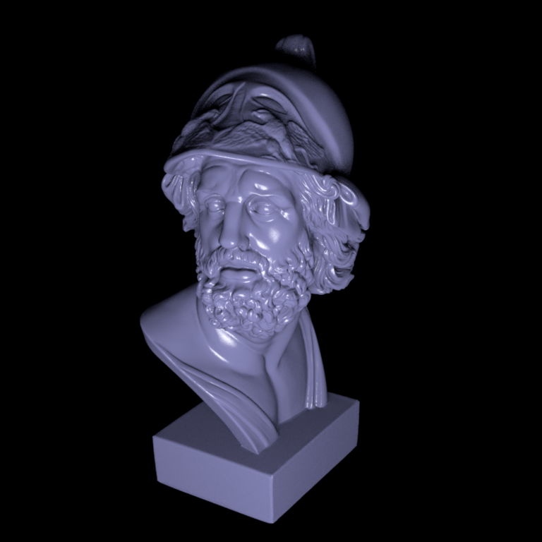
Ajax (rough):
Path tracer with next event estimation (20 points)
==================================================
Here my implementation of the algorithm is based on a loop (no recursion here to optimize performance). The idea is to have an ingoing ray we update at every pass, and check for intersection. If there's no intersection, we stop the loop here. If there is and the mesh intersected is diffuse, we compute direct illumination
When computing the direct illumination component, we randomly pick a light source (we can uniformly sample a light or adapt the distribution to some parameters, such as the radiance of the light to have a better image: we just have to make sure we take the probability into account when we weight the direct illumination value). Then we can randomly select a point on this light source and compute the direct illumination component.
Once we have this value, we check if the intersection is an emitter and if the previous intersection was specular: in this case, we have to take the emitted radiance into account.
After this we generate a sample from the BSDF and compute the indirect illumination component (only the multiplier, as the rest will be computed in the next pass).
Finally, as this algorithm may never finish, we add a probability q at every loop that the algorithm stops here (so we have to take this value into account when computing the radiance). For now, this probability is fixed, but it could be interesting to have it vary depending on the radiance of the ray (with more radiance, it would be less likely to stop here).
Validation
----------
Apart from the noise which changes (due to the way we call the samples, there's randomness from one algorithm to the other), the images look pretty much the same. The path_ems tests all pass here.
We can however note in the table test scene (and this is also the case for all the other table test scenes) that our reflections/refractions are less sharp and a little more noisy then in the original image (maybe due to the way we stop querying rays).
Cornell box:
Veach material test scene:
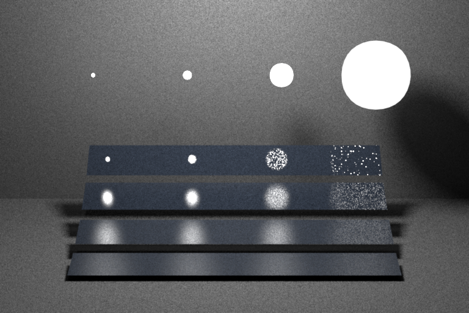
Table test scene:
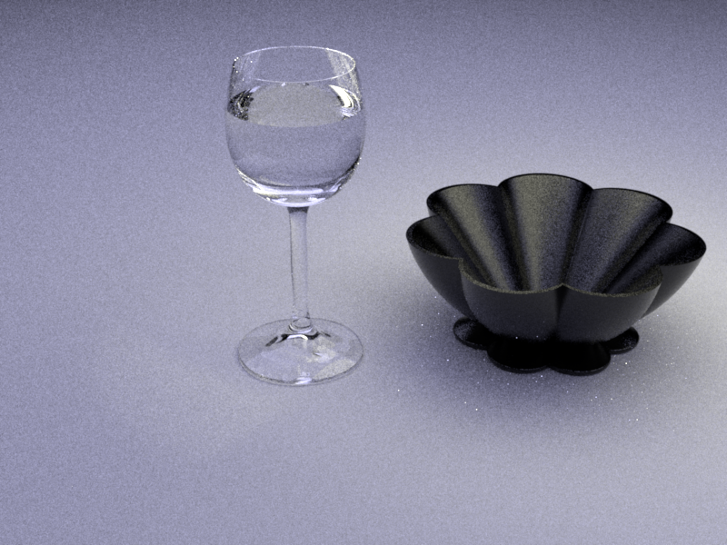
Brute force path tracer (10 points)
===================================
For this path tracing algorithm, the only difference with the path_ems one is that we never compute the direct illumination component but we always take the emitted radiance into account (previsouly, it was only taken into account if the previous intersection was specular).
For this algorithm, we pass all the tests without any issue.
Validation
----------
Here, apart from the noise, we get the exact same images.
Cornell box:
Veach material test scene:
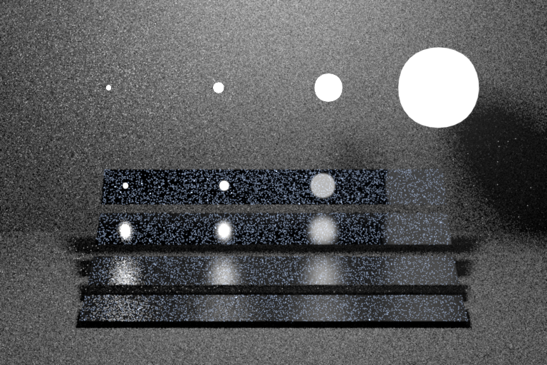
Table test scene:
Path tracer with Multiple Importance Sampling (30 points)
=========================================================
Now we finally get to the importance sampling. Again, I took path_ems as a base. The first thing to do is to update the weight when computing the direct illumination component. It's important to get rid of the geometric term as there are some simplifications when we multiply by the weight (so the result is Ld = fr * Le * cos(theta i) / (pBRDF + pLight), with pLight being with respect to solid angles (as well as pBRDF)).
Now we also add a new condition: when the outgoing ray sampled by the BRDF hits an emitter, we add the contribution of this emitter to the computed direct illumination (and we don't forget to weight the contribution, so we get again Ld = fr * Le * cos(theta i) / (pBRDF + pLight) since the pBRDFs terms cancel out with a numerator and a denominator).
For this algorithm, we pass all the tests without any issue.
Validation
----------
Again here, apart from the noise, the images are the same (except from some reflections in the table test scene, as discussed previously).
Cornell box:
 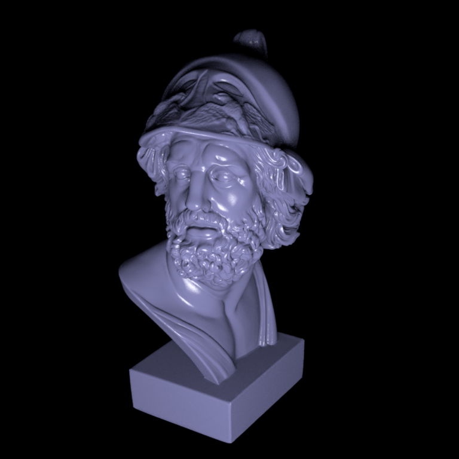
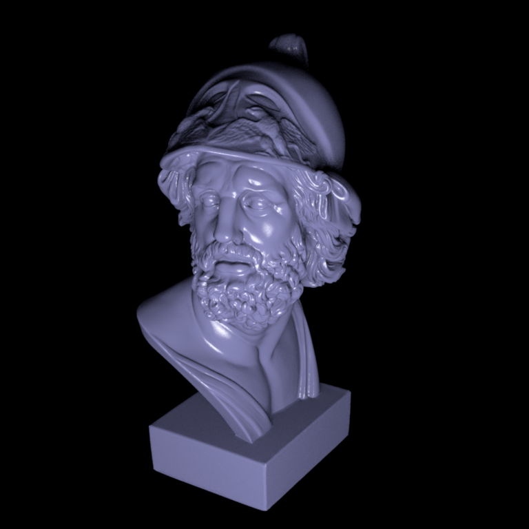

 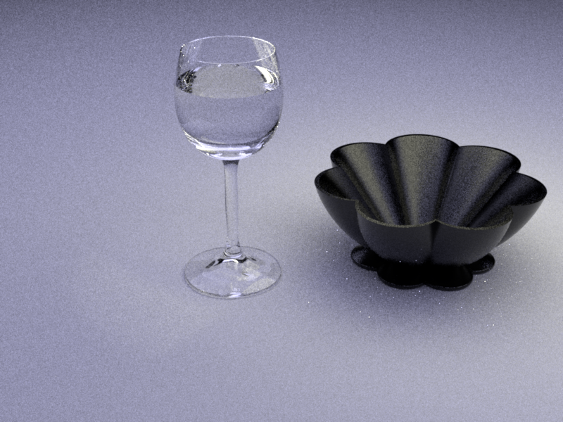
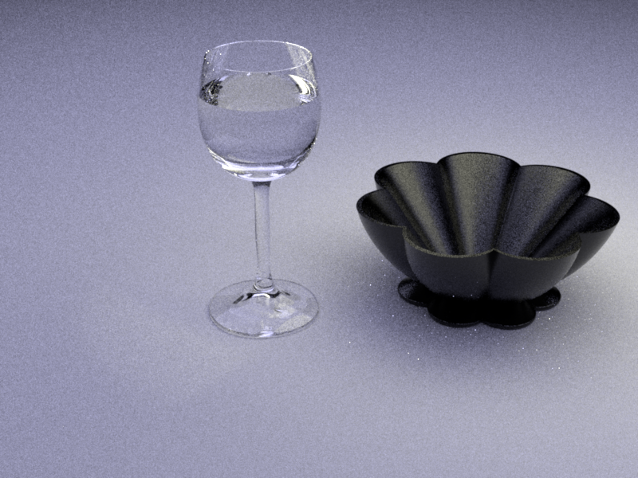
 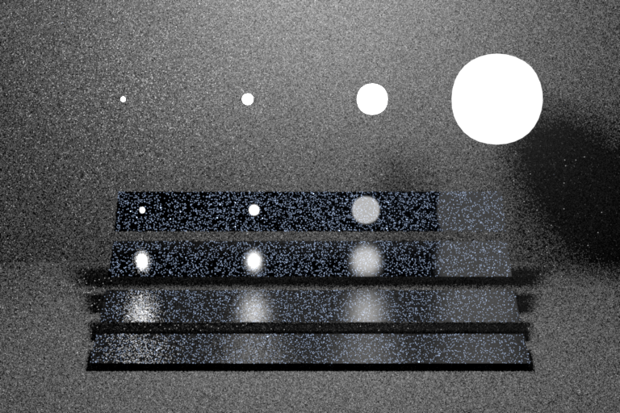
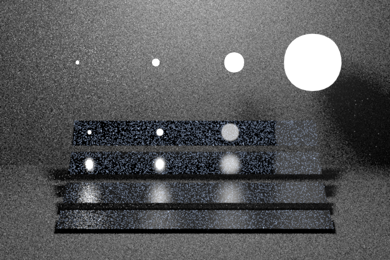

 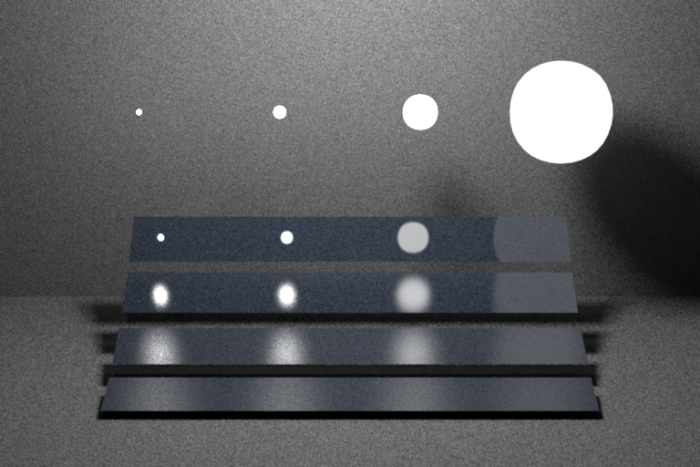
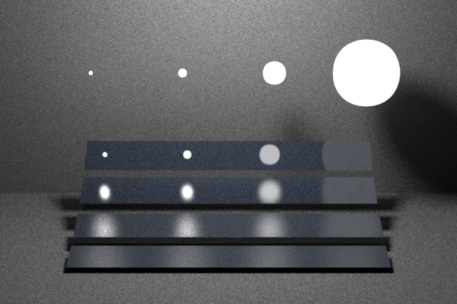